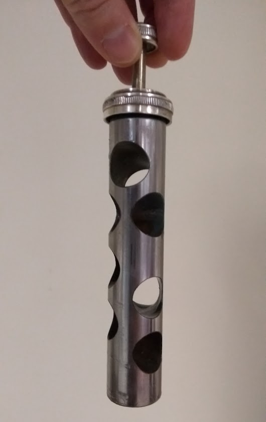
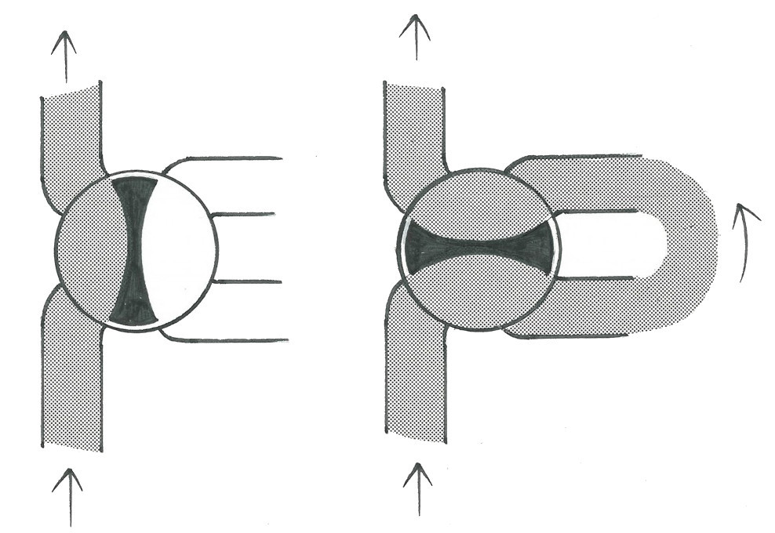
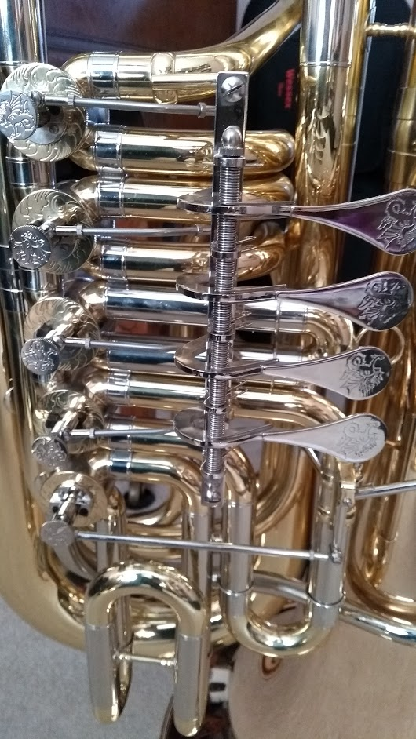
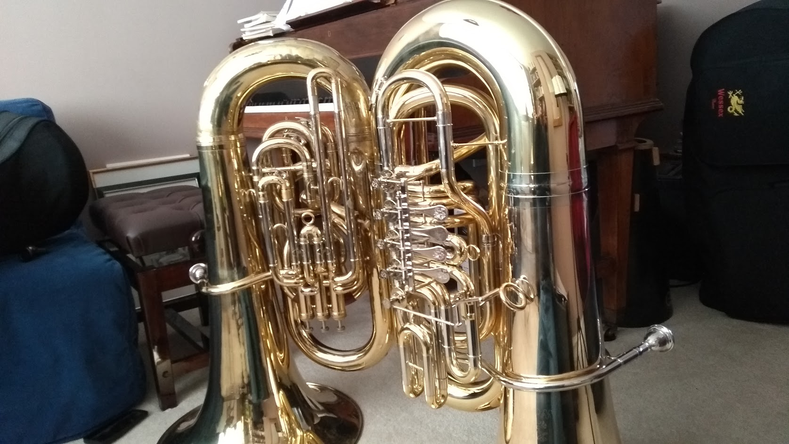
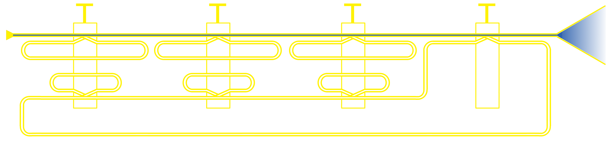
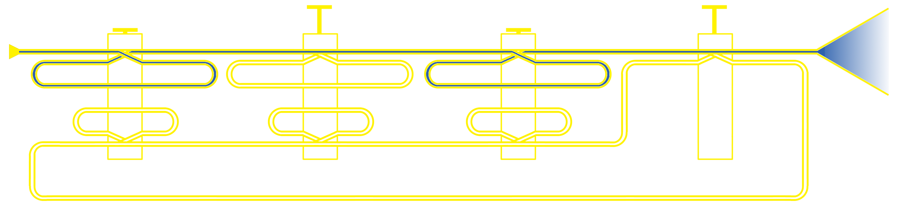
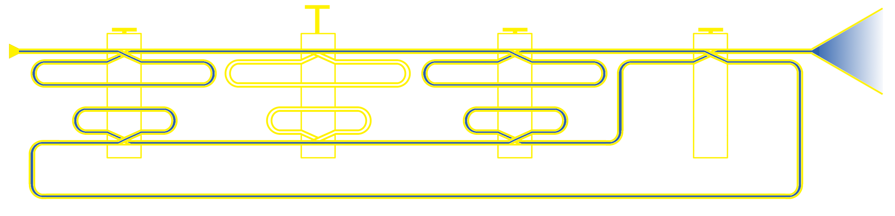

Make a Joyful Noise
I have a new tuba!
If my mention of a tuba is a surprise (it shouldn't be), check out this short student-film, by my buddy Jane, which explains all:
My new tuba isn't a replacement for my current instrument (which I got when I was sixteen years old). Rather, the instruments complement each other. What's the difference? If my current tuba is a professional "all rounder", my new instrument is a sort of "heavy duty" tuba for big orchestral pieces (most of my current playing is orchestral).
The tuba works by amplifying the buzzing sound I make with my lips into a mouthpiece. I change notes by tensing or relaxing my lips (so the buzzing sound gets higher or lower) which gives me a limited series of notes that are overtones to the "fundamental" (lowest) note produced by blowing down the length of the tube of the instrument. I use valves to add tubing to the length of the instrument to fill in the notes between the overtones so I can play all the notes I need (i.e. a chromatic scale).
What's interesting is how the two instruments are different.
My original instrument is pitched in Eb (E flat) -- which means the instrument's fundamental note is the Eb more than an octave below the bass clef (i.e. very low). My new instrument is pitched in C, so its fundamental note is even lower, thus making it an instrument more suited to lower sounding music.
The valves on each instrument are different. I have "piston" valves on my original instrument. These are spring loaded and when pressed fully down add additional lengths of tubing to the instrument. The photograph below is of the inside of the valve so you can see the holes in the piston used to connect the different pipes, depending on the valve's position (up or down).

My new instrument uses "rotary" valves. These, as the diagram below shows, rotate to connect additional lengths of tubing (the passage of air is indicated by the hatched area). A sort of lever is used to actuate each valve. They're generally much quieter and more reliable than piston valves (less moving parts to make clanking sounds) although they can be slower to "engage".

The picture below shows the rotary valves on my new tuba. Notice the levers I press with my fingers to engage the valves.

While both tubas look "tuba shaped" my original tuba points to the right (as the player is looking at the instrument) whereas my new instrument points to the left. This simply means I have to hold them differently and there's not really any change in sound. You can see this difference in the picture below (the new tuba is on the right):

The final major difference is in the number of valves each instrument has. My original instrument has four "compensating" valves which allow me to get a full chromatic scale. The new instrument has five "non-compensating" valves: the first four work like my original instrument and allow me to play a full chromatic scale, but the fifth valve is used to help tune the very lowest notes.
Why does the new tuba need a special extra "tuning" valve and what on earth am I talking about when I say "compensating"..? This, dear reader, is where maths, acoustics, logic and music come together in a spectacular fashion.
My new tuba is approximately 524.9 cm in length without any valves engaged. This produces the note, "C". The first valve adds enough pipe to lower the pitch by a tone, giving me a "Bb" (B flat) which requires the total length of tube to be 589.2 cm. Simple arithmetic tells us the total length of the tube added by using the first valve is therefore 64.3 cm (the "open" length of the instrument with the added tube should give the correct length to play a tone lower). The second valve drops the pitch by a semitone to the note "B" which requires a total length of 556.1 cm. Similarly, the third valve lowers the pitch by one and a half tones, giving me an "A" which requires the total length of tube to be 624.2 cm. Again, the simple arithmetic tells me that the length of tube added by the second valve is 31.2 cm while the length added by the third valve is 99.3 cm.
Here's where it gets interesting. If I want to play the note "G" I need to make the length of the instrument 700.6 cm. Given the note "G" is two and a half tones below "C" I could take the tone provided by the first valve and one and a half tones of the third valve and use them together. It means the resulting length of additional pipe is 64.3 cm (the first valve) + 99.3 cm (the third valve) giving me a total of 163.6 cm. However, the open length of the instrument (524.9 cm) with the additional lengths of pipe (163.6) brings the total length to 688.5 cm, which isn't the 700.6 cm needed to play the note in tune!
The solution is to use my fourth valve, which adds 175.7 cm to the length of the instrument, thus making it in tune. However, when I need to use my fourth valve in combination with my other three valves I still encounter the same sort of "wrong length of pipe" problem I describe above. I must use combinations of valves in order to get all the notes I need in the chromatic scale. So what can I do?
This is where the fifth valve on my new tuba comes into play. It has a special tuning slide I can adjust "in real time" as I play, thus allowing me to tune the fifth valve as and when I need it. It can also be tuned in such a way that it "compensates" (remember that word) for the missing lengths of tubing when I use the other valves together.
Which leaves us with the problem of keeping my current tuba (with only four valves) in tune. Thankfully, this instrument has "compensating" valves which work in a rather ingenious manner. The schematic representation of my current tuba is shown below. The mouthpiece is on the left with the bell on the right and between are the four valves and associated tubing (not to scale). None of the valves are engaged so the column of air blown through the instrument goes directly through without any "detours" (as shown by the pipe filled in with blue).
When I press the first and third valves down the expected two extra lengths of tubing are added, as shown by the two loops of pipe filled with blue:
Here's where it gets really clever. When the fourth valve is pressed down, not only is the expected additional length of tube added to the length of the instrument, but this tube is also diverted back through the other three valves which have additional "compensating" tubes to bring the instrument in tune:
This is, essentially, a logical AND expressed as pipe-work. If
the first and fourth valves are pressed then add some new "compensating" length
of pipe. Clever huh..?
The disadvantage of this system is the air does two "circuits" around the instrument (once through the first three valves, and then again if the fourth valve is pressed so the compensating pipes can come into effect). This makes the instrument harder to blow (since there are more bends to blow through). My new instrument feels like there is less to push against when I'm playing.
Finally, given all the technical tuba-related geekery described above I want to end on an artistic note...
These instruments are beautiful to look at and playing them is a joy. It's hard to explain to folks who have never performed music what an amazing privilege it is. I get to play beautifully designed and precision engineered instruments as part of an orchestra, band or smaller ensemble. By playing with my fellow musicians to an audience I'm taking part in a unique social activity. No matter the mood or difficulty of the piece I'm playing, I love the sense of non-verbal communication I have with my fellow musicians and collectively with the audience. I love that I am a part of something creative, challenging, expressive, collaborative and most definitely greater than the sum of its parts. That the audience appreciate these efforts is a lovely positive side effect.
To me, this is always "joyful noise". :-)